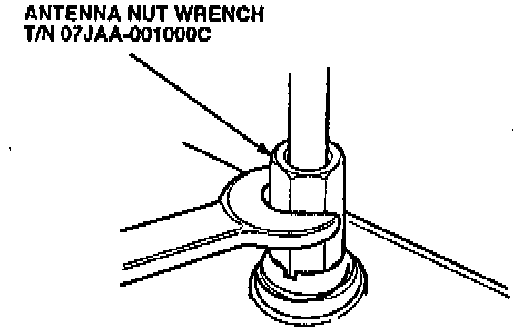
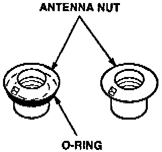
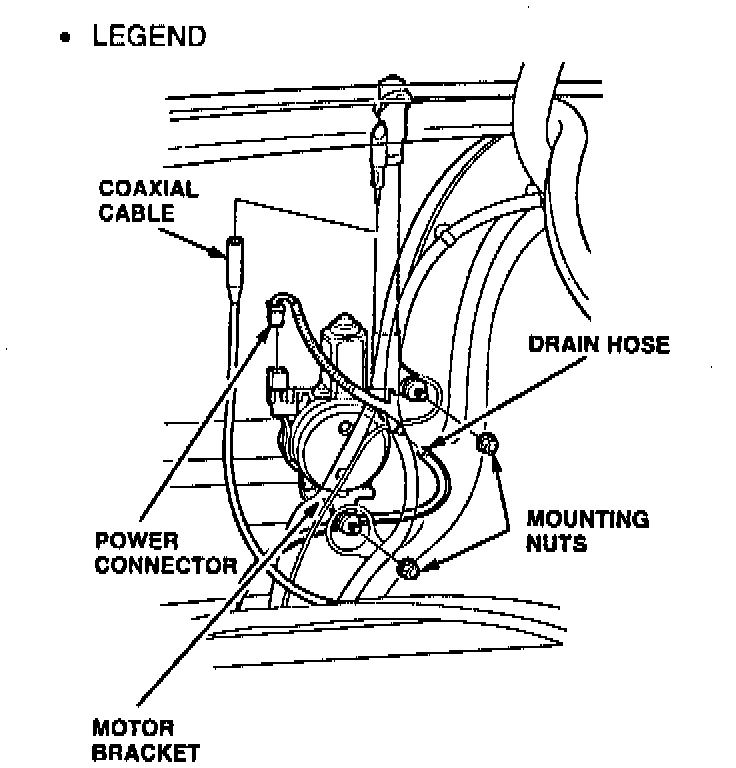
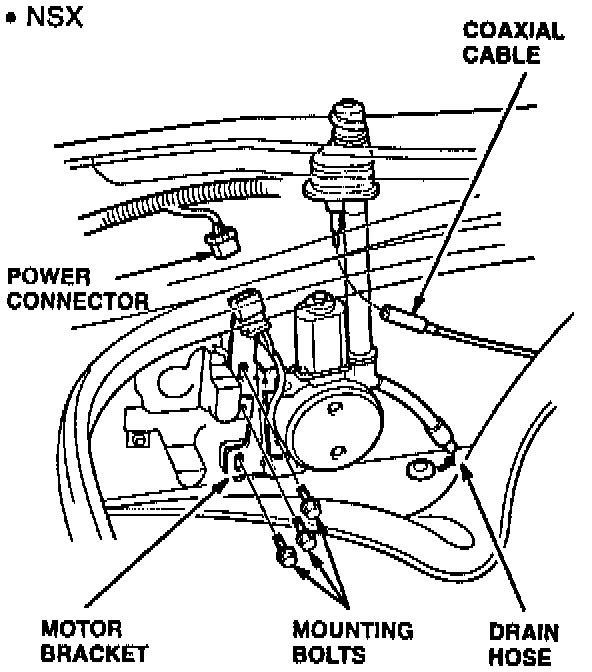
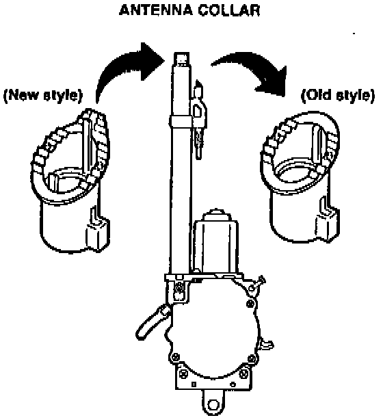
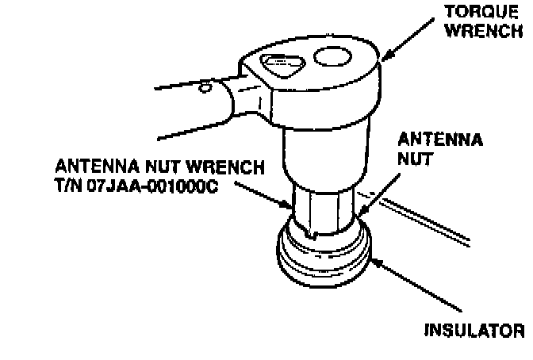

Antenna Collar Replacement

1. Remove the antenna nut with the special tool.

2. Inspect the antenna nut.
^ If the antenna nut has an O-ring, do not install an antenna seal in the replacement collar.
^ If the antenna nut does not have an O-ring, you must install an antenna seal in the replacement collar.


3. Disconnect the coaxial connector and the power connector from the antenna assembly. Loosen the mounting hardware; then remove the antenna assembly from the car.

4. Remove and discard the antenna collar.
5. Install the new antenna collar onto the antenna tube.
6. If the antenna nut did not have an O-ring on it, install a new collar seal into the antenna collar.
7. Install the antenna assembly into the car, but do not tighten the mounting hardware at this time.
8. Connect the power connector and the coaxial connector to the antenna assembly

9. Install the insulator and the antenna nut. Tighten the antenna nut to 2.3 N-m (0.23 kg-m, 20 lb.in.) using the special tool and a torque wrench.
10. Tighten the antenna motor assembly mounting hardware.